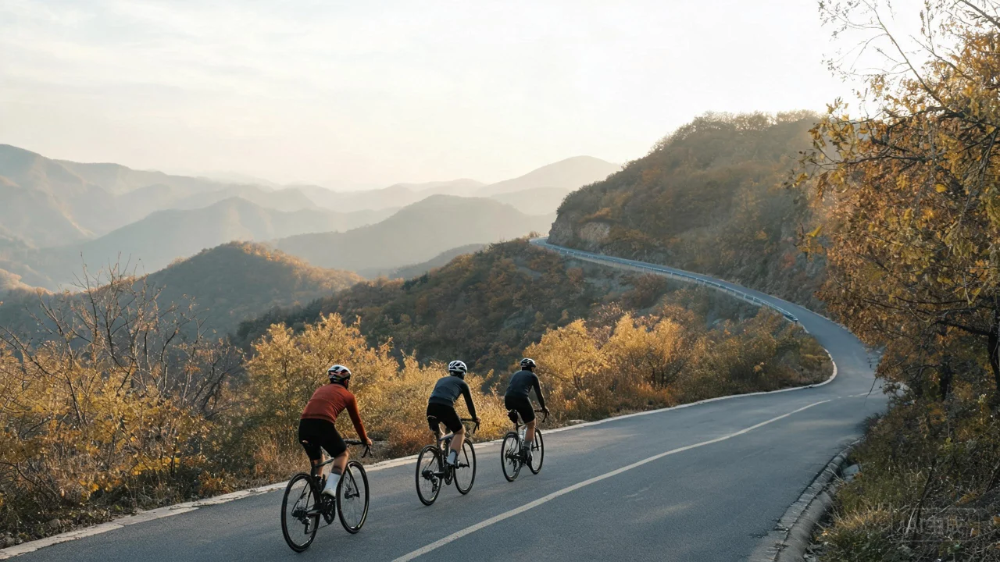

背景与头像共同组成我的骑行名片；默认普通成员视图，100%时不重复完整度卡片。
方案 C · 骑行影像志
路上的风景，
同行的我们。
头像与背景，就是我的骑行名片。
报名与管理，按已有能力讲清楚。
此里，从一段山路开始。
16完整业务页面
12关键状态样张
CILI暖米白 · 墨黑 · 行动红

妙峰山 / 秋日爬坡
一次完整的出发。
在手机预览中点击页面，走完报名、凭证和管理流程。
可切换 340 / 375 / 430 px 宽度检查留白与可读性。
翻过每一页。
从发现风景，到整理出发。
16 个页面保持同一套排版、操作和信息规则。
骑友体验
10 页保留墨黑路线事实与报名决策块；公开骑友只显示昵称。
地图、海拔、坡段与关键点共享82km/986m事实，不展示虚构实时天气。
经验三档枚举；审核、公开有名额和满员候补按真实状态区分。
票据化表达状态和下一步；取消需确认，并给出重报路径。
本人完整资料与文字凭证；只分享活动详情，待审核和候补不显示有效凭证。
背景与头像共同组成我的骑行名片；默认普通成员视图，100%时不重复完整度卡片。
头像独立即时保存、背景最多一张；整表校验7项，性别仅男/女，上传中锁定保存。
通知按次请求微信订阅，隐私走微信管理，缓存安全重建；Strava只在管理员视图展示。
全平台唯一俱乐部只读主页；不出现推荐、加入申请或容量。
管理体验
06 页把编辑与审核分开；主要操作为创建活动。
公开/审核报名、自动截止、Strava与GPX、最多3封面；预览绑定完成前锁定发布。
六项筛选固定3×2，完整资料不靠缩小字号提高密度。
待审核才显示通过/驳回，通过后才能确认签到；已签到和驳回只读。
历史club-applications路由实际是单俱乐部管理；无申请列表和第二个创建入口。
历史club-application-detail路由实际是唯一俱乐部资料编辑。
顺利之外，也有答案。
加载、失败、审核和路线准备都有可读的解释。
点开状态样张，查看下一步与恢复路径。
风景可以慢，信息要清楚。
影像志的三个设计决定。
摄影先讲气氛。
活动、人物和俱乐部各有自己的照片。可靠的深色承托让白色标题始终可读；距离和时间在照片外保持清晰。
山路只讲一套数据。
同一活动共享距离、爬升、时间和集合地点。路线分析保持地图与海拔一致，个人信息遵守本人、管理员和公开骑友的可见范围。
每一步，都留好余地。
大字号、48 px 主控件和不少于 44 px 的实际触控范围。长屏自然流动，表单失败保留输入，路线准备期间锁定发布。
纸张#FBF5EA
墨黑#211F1C
行动红#C0321F
米杏#F3E6D0
正文使用系统中文无衬线字体，影像标题使用宋体；字体与交互无需联网。摄影资源已保存本地。